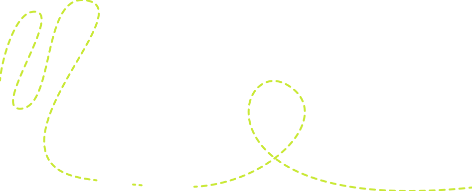
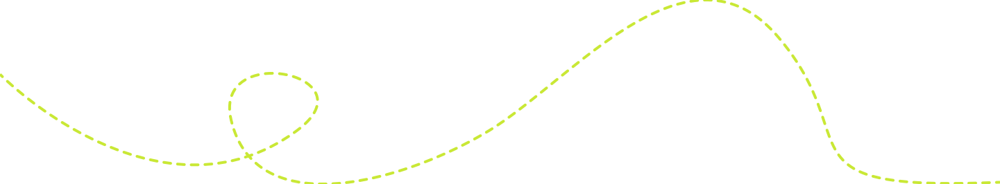

imagery / section — the path travels over it

assets/motifs/dash-wave.svg · original Figma vector
round dashes · always
lime
one per composition
it
leads the eye
somewhere —
continuity · movement · creativity